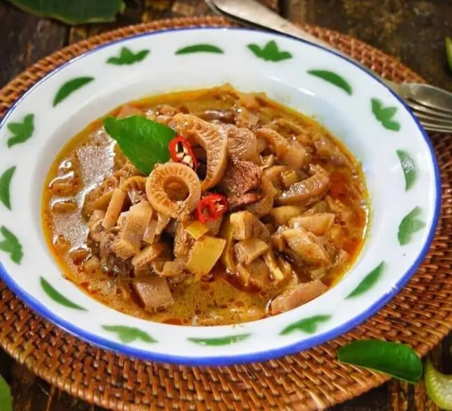

1.Pelecing Kangkung

Pelecing. Nama kuliner yang satu ini bisa jadi cukup aneh didengar. Salah satu kuliner khas Lombok - NTB ini merupakan sajian makanan yang paling sering dicari, khususnya untuk para penggemar pedas. Berbahan baku kangkung asli Lombok, dicampur dengan sambal hasil olahan cabe, tomat dan sedikit terasi racikan tangan, ditambah dengan parutan kelapa sebagai penghias. Klik gambar di atas untuk mengetahui cara pembuatannya!!!!
2.Jaje Tujak

Orang Lombok sebut poteng jaje tujak. Jajanan ini bahan tapai diolah menjadi makanan ringan. Makanan ini biasanya disajikan saat lebaran ketupat tiba. Kendati namanya terdengar asing bagi warga luar Lombok. Namun rasa dari jajanan ini dijamin mampu membuat ketagihan. Poteng jaje tujak sendiri memiliki arti jajanan tapai yang ditumbuk. Baca Selengkapnya!!
3. Beberok Terong

Beberok terong atau sambal terong merupakan salah satu makanan khas lombok yang menjadi primadona. Menu ini, biasanya menjadi pendamping untuk sajian makan seperti ayam taliwang, nila bakar, ayam goreng, cumi bakar, bahkan tempe dan tahu.Sekilas beberok terong jika dilihat seperti lalapan yang dipotong-potong kemudian dicampur sambal dan diuleg lalu yang terakhir dihidangkan dalam kondisi mentah-mentah..Penassarannn gimana cara membuat makanan satu ini untuk selengkapnya klik judul di atas..
4. Sayur Ares
Ares atau yang sering disebut dengan sayur Ares adalah makanan khas NTB yang berasal dari daerah Lombok. Makanan yang satu ini dibuat dengan menggunakan bahan dasar pisang. Kemudian bahan ini akan dimasak dengan bumbu khas Lombok yang membuat ia menjadi sangat nikmat. Untuk lebh jelassnya klik gambar di atas..
5.Nasi Balap Puyung
Nasi Balap Puyung adalah makanan khas berasal dari Desa Puyung, Kecamatan Jonggat, Kabupaten Lombok Tengah, Provinsi Nusa Tenggara Barat. Nasi Balap Puyung ini begitu sederhana berisi nasi putih, ayam suwir dengan bumbu pedas, kacang kedelai dan keripik kentang yang gurih, lengkap dengan oseng kacang panjang dan telur, lalu dibungkus dengan daun pisang atau kertas minyak. Selengkapnya..